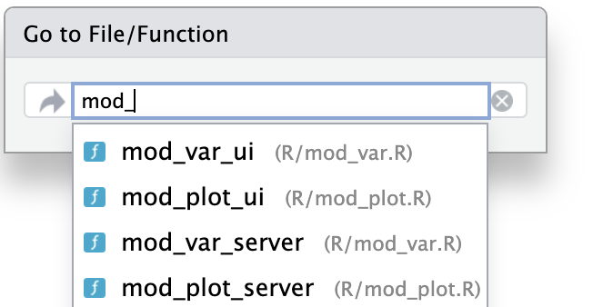
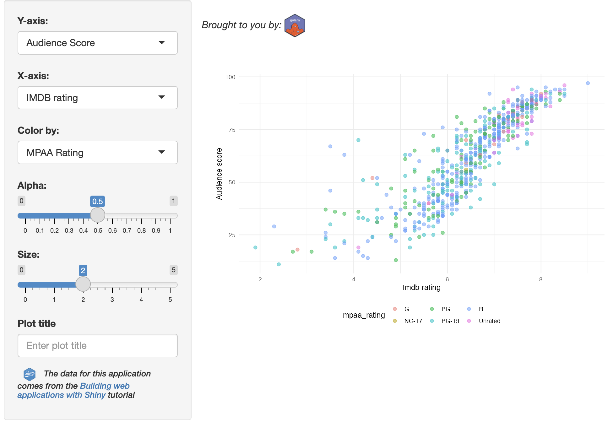

install.packages("golem")
library(golem)
golem::create_golem(path = "gap")The golem framework
gap
The golem package is an ‘opinionated Shiny framework’ that provides many options for users experienced with creating R packages, but who are looking to streamline their application development.1
Below is an overview of the features/functions in the golem framework:
| Feature | Arguments/Options | Description/Comments |
|---|---|---|
dev/ scripts |
|
These files are automatically included in new golem apps and walk through set up, development, and deployment |
fill_desc(): fills DESCRIPTION file |
Arguments are passed as strings without having to worry about formatting (i.e., utils::person()). |
Includes many necessary fields often overlooked when using usethis::create_package() |
attachment::att_amend_desc() |
Updates the package dependencies in the Imports field of DESCRIPTION |
Although not part of the golem package, attachment is built by the fine folks at ThinkR and makes managing dependencies smoother. |
set_golem_options() |
This sets a variety of options in the golem-config.yml file (most notably the name, version, and path to your app-package). |
|
use_recommended_tests() |
Create testthat infrastructure and adds a collection of boilerplate tests in the tests/testthat/ folder. |
|
use_utils_ui() & use_utils_server() |
with_test is set to TRUE |
Creates a collection of commonly used UI and server functions (and accompanying tests). |
add_module("name", fct, utils, export, with_test) |
|
This is one of the best features in An added bonus is a consistent file naming convention. |
add_fct() and add_utils() |
with_test: creates the accompanying tests/testthat/test-[name].R file. |
These are essentially wrappers for usethis::use_r() and usethis::use_test() |
Adding non-R code files:
|
Each
|
Each of these functions create the necessary files in the inst/app folder. |
Start
To create a new golem app from the console, enter the following:
If creating a golem app from RStudio’s New Project Wizard, the following defaults are available:

golem shiny appThe initial folder structure for a new golem application is below:
gap
├── DESCRIPTION
├── NAMESPACE
├── R
│ ├── app_config.R
│ ├── app_server.R
│ ├── app_ui.R
│ └── run_app.R
├── dev
│ ├── 01_start.R
│ ├── 02_dev.R
│ ├── 03_deploy.R
│ └── run_dev.R
├── inst
│ ├── app
│ │ └── www
│ │ └── favicon.ico
│ └── golem-config.yml
├── man
│ └── run_app.Rd
├── gap.Rproj
├── renv
│ ├── activate.R
│ ├── sandbox
│ │ └── R-4.2
│ └── settings.dcf
└── renv.lock
12 directories, 17 filesdev/ scripts
The dev/ folder contains golem‘s ’guided tour’ scripts and dev/run_dev.R:
Below are the scripts to guide you through developing your golem app and the dev/run_dev.R code.
dev/01_start.Ropens automatically
gap/dev/
├── 01_start.R
├── 02_dev.R
├── 03_deploy.R
└── run_dev.R
1 directory, 4 filesdev/run_dev.Ris for running the ‘development version’ of the application.
If you are familiar with R package development, you can think of these scripts as a ‘shiny app development checklist.’
DESCRIPTION
In the dev/01_start.R script, users build a DESCRIPTION file with golem::fill_desc()
fill_desc()uses thedescpackage and the sections are entered in akey = "value"format
golem::fill_desc(
pkg_name = "gap",
pkg_title = "An example goelm app",
pkg_description = "A working example of the golem package.",
author_first_name = "Martin",
author_last_name = "Frigaard",
author_email = "mjfrigaard@pm.me",
repo_url = NULL # The URL of the GitHub Repo (optional)
)- In
dev/02_dev.R, theattachment::att_amend_desc()will “AmendDESCRIPTIONwith dependencies read from package code parsing”. Ifattachmentis not installed, useinstall.package('attachment')
Package files
dev/01_start.R contains the usethis functions for for creating common package development files:
LICENSE:
usethis::use_mit_license()README:
usethis::use_readme_rmd()Code of Conduct:
usethis::use_code_of_conduct()Lifecycle badge:
usethis::use_lifecycle_badge("Experimental")NEWS.md:usethis::use_news_md(open = FALSE)Git:
usethis::use_git()
golem files
The golem functions in dev/01_start.R are for setting the golem options and using recommended tests.
Options:
golem::set_golem_options()Tests (with
testthat):golem::use_recommended_tests()Favicon:
golem::use_favicon()Helper functions:
golem::use_utils_ui()andgolem::use_utils_server()creategolem’s UI (R/golem_utils_ui.R) and server (R/golem_utils_server.R) utility functions in theR/folder
golem gives away lots of free code!
Both R/golem_utils_ui.R and R/golem_utils_server.R contain a lot of helper functions that come in handy if you’re tired of writing out particular function names (like reactiveValuesToList() or column(width = 6)/column(width = 12))
Check them out here:
App files
The dev/02_dev.R file covers developing a golem app-package. Most of the golem functions are for creating files in the R/ and inst/ folders::
R/
├── app_config.R
├── app_server.R
├── app_ui.R
└── run_app.R
1 directory, 4 filesR/app_ui.RandR/app_server.Raregolem’s version ofui.Randserver.R
#' The application User-Interface
#'
#' @param request Internal parameter for `{shiny}`.
#' DO NOT REMOVE.
#' @noRd
app_ui <- function(request) {
tagList(
# Leave this function for adding external resources
golem_add_external_resources(),
# Your application UI logic
fluidPage(
h1("gap")
)
)
}golem_add_external_resources()is a wrapper forshiny::addResourcePath(),htmltools::htmlDependency(), andapp_sys()(which is a wrapper forsystem.file()):
#' Add external Resources to the Application
#'
#' This function is internally used to add external
#' resources inside the Shiny application.
#'
golem_add_external_resources <- function() {
add_resource_path(
"www",
app_sys("app/www")
)
tags$head(
favicon(),
bundle_resources(
path = app_sys("app/www"),
app_title = "gap"
)
# Add here other external resources
# for example, you can add shinyalert::useShinyalert()
)
}#' The application server-side
#'
#' @param input,output,session Internal parameters for {shiny}.
#' DO NOT REMOVE.
#' @import shiny
#' @noRd
app_server <- function(input, output, session) {
# Your application server logic
}run_app.Ris an exported function that is available for me to run my app after I’ve installed the package:
library(gap)
gap::run_app()Code file wrapper functions
golemhas wrappers for creating modules and helper functions in theR/folder:
## Add modules ----
## Create a module infrastructure in R/
golem::add_module(name = "name_of_module1", with_test = TRUE)
golem::add_module(name = "name_of_module2", with_test = TRUE)
## Add helper functions ----
## Creates fct_* and utils_*
golem::add_fct("helpers", with_test = TRUE)
golem::add_utils("helpers", with_test = TRUE)with_test = TRUEensures these functions will also create test files intests/
Configure
- The
R/app_config.Rfile contains two functions:app_sys()(covered above) andget_golem_config(), which reads theinst/golem-config.ymlconfiguration file
default:
golem_name: gap
golem_version: 0.0.0.9000
app_prod: no
production:
app_prod: yes
dev:
golem_wd: !expr here::here()golem-config.ymlgives access to the app version, name, and (development) working directory, so it can be used to add “production-only elements” and is “shareable across golem projects”
golemusesapp_sys()(a wrapper aroundsystem.file()) to add external resources to the application (app_sys()is included in theR/app_config.Rfile)
# Access files in the current app
app_sys <- function(...) {
system.file(..., package = "gap")
}get_golem_config()is also included in theR/app_config.Rfile
# Read App Config
get_golem_config <- function(
value,
config = Sys.getenv(
"GOLEM_CONFIG_ACTIVE",
Sys.getenv(
"R_CONFIG_ACTIVE",
"default"
)
),
use_parent = TRUE,
# Modify this if your config file is somewhere else
file = app_sys("golem-config.yml")
) {
config::get(
value = value,
config = config,
file = file,
use_parent = use_parent
)
}Testing
The tests/ folder is created in dev/01_start.R with golem::use_recommended_tests(), which is a wrapper around usethis::use_testthat()
golem::use_recommended_tests()adds thespellingpackage to ourDESCRIPTIONand updates theWORDLIST2
- The
testsfolder uses thetestthatframework
tests/testthat/
├── _snaps
├── test-golem-recommended.R
├── test-golem_utils_server.R
└── test-golem_utils_ui.R
2 directories, 4 filesExternal
The inst/ file initially has the following contents/structure:
inst/
├── WORDLIST
├── app/
│ └── www/
│ └── favicon.ico
└── golem-config.yml The golem-config.yml file is covered above, but the inst/app/ folder works just like the inst/extdata folder (it is loaded when the package is installed and makes these files available to the application).
dev/02_dev.R includes golem wrappers for including CSS, JavaScript, and SASS files to the inst/app/www/ folder:
Deploy
The final script in the guided tour contains functions for deploying a new application to Posit Connect or Docker (it opens automatically after completing the dev/02_dev.R)
RStudio (Posit) Connect
Docker
I’ll deploy my app using shinyapps.io, so after running golem::add_shinyappsio_file() I will see the following output and a new app.R file.
golem::add_shinyappsio_file()
── Creating _disable_autoload.R ──────────────────────────────────────────────────────
✔ Created
✔ Setting active project to '/Users/mjfrigaard/projects/gap'
✔ Adding '^app\\.R$' to '.Rbuildignore'
✔ Adding '^rsconnect$' to '.Rbuildignore'
✔ Adding 'pkgload' to Imports field in DESCRIPTION
• Refer to functions with `pkgload::fun()`
✔ File created at /Users/mjfrigaard/projects/gap/app.R
To deploy, run:
• rsconnect::deployApp()
• Note that you'll need to upload the whole package to ShinyApps.ioapp.Rcontents
# Launch the ShinyApp (Do not remove this comment)
# To deploy, run: rsconnect::deployApp()
# Or use the blue button on top of this file
pkgload::load_all(export_all = FALSE, helpers = FALSE, attach_testthat = FALSE)
options( "golem.app.prod" = TRUE)
gap::run_app() # add parameters here (if any)Writing code
Building an application with golem is very similar to developing an R package. However, some of the app development processes have been streamlined into wrapper functions. I’ll cover creating modules and utility functions using these helpers in the following sections.
Modules & utility functions
New modules and utility functions can be created with golem::add_module() or golem::add_utils()/golem::add_fct().3
The code below creates the following files:
add_module(name = 'name',
fct = 'fun',
utils = 'fun',
with_test = TRUE,
export = TRUE)R/mod_name.R: a boilerplate Shiny module (ui and server functions)
#' name UI Function
#'
#' @description A shiny Module.
#'
#' @param id,input,output,session Internal parameters for {shiny}.
#'
#' @rdname mod_name
#' @export
#'
#' @importFrom shiny NS tagList
mod_name_ui <- function(id){
ns <- NS(id)
tagList(
)
}
#' name Server Functions
#'
#' @rdname mod_name
#' @export
mod_name_server <- function(id){
moduleServer( id, function(input, output, session){
ns <- session$ns
})
}
## To be copied in the UI
# mod_name_ui("name_1")
## To be copied in the server
# mod_name_server("name_1")R/mod_name_fct_fun.RandR/mod_name_utils_fun.R: empty R files in the R/ folder (with the same prefix as the module).tests/testthat/test-mod_name.R: a test file for the module (with some boilerplate tests)
testServer(mod_name_server,
# Add here your module params
args = list(), {
ns <- session$ns
expect_true(
inherits(ns, "function")
)
expect_true(
grepl(id, ns(""))
)
expect_true(
grepl("test", ns("test"))
)
# Here are some examples of tests you can
# run on your module
# - Testing the setting of inputs
# session$setInputs(x = 1)
# expect_true(input$x == 1)
# - If ever your input updates a reactiveValues
# - Note that this reactiveValues must be passed
# - to the testServer function via args = list()
# expect_true(r$x == 1)
# - Testing output
# expect_true(inherits(output$tbl$html, "html"))
})
test_that("module ui works", {
ui <- mod_name_ui(id = "test")
golem::expect_shinytaglist(ui)
# Check that formals have not been removed
fmls <- formals(mod_name_ui)
for (i in c("id")) {
expect_true(i %in% names(fmls))
}
})- Below is the
mod_varmodule:
mod_var_ui <- function(id) {
ns <- NS(id)
tagList(
selectInput(
inputId = ns("y"),
label = "Y-axis:",
choices = c(
"IMDB rating" = "imdb_rating",
"IMDB number of votes" = "imdb_num_votes",
"Critics Score" = "critics_score",
"Audience Score" = "audience_score",
"Runtime" = "runtime"
),
selected = "audience_score"
),
selectInput(
inputId = ns("x"),
label = "X-axis:",
choices = c(
"IMDB rating" = "imdb_rating",
"IMDB number of votes" = "imdb_num_votes",
"Critics Score" = "critics_score",
"Audience Score" = "audience_score",
"Runtime" = "runtime"
),
selected = "imdb_rating"
),
selectInput(
inputId = ns("z"),
label = "Color by:",
choices = c(
"Title Type" = "title_type",
"Genre" = "genre",
"MPAA Rating" = "mpaa_rating",
"Critics Rating" = "critics_rating",
"Audience Rating" = "audience_rating"
),
selected = "mpaa_rating"
),
sliderInput(
inputId = ns("alpha"),
label = "Alpha:",
min = 0, max = 1, step = 0.1,
value = 0.5
),
sliderInput(
inputId = ns("size"),
label = "Size:",
min = 0, max = 5,
value = 2
),
textInput(
inputId = ns("plot_title"),
label = "Plot title",
placeholder = "Enter plot title"
)
)
}
mod_var_server <- function(id) {
moduleServer(id, function(input, output, session) {
return(
reactive({
list(
"y" = input$y,
"x" = input$x,
"z" = input$z,
"alpha" = input$alpha,
"size" = input$size,
"plot_title" = input$plot_title
)
})
)
})
}View the modules I use in the gap application here on GitHub.
- The
scatter_plot()utility function file end with a_utilssuffix:
scatter_plot <- function(df, x_var, y_var, col_var, alpha_var, size_var) {
ggplot2::ggplot(data = df,
ggplot2::aes(x = .data[[x_var]],
y = .data[[y_var]],
color = .data[[col_var]])) +
ggplot2::geom_point(alpha = alpha_var, size = size_var)
}
Module names
Including mod in the name of module scripts and functions makes it easier to separate them from other functions in my package namespace, if I’m using tab-completion, or if I’m searching for a particular file using Ctrl + .:

Adding tests
- Include tests for new modules and functions using the
with_test = TRUEargument
tests/testthat/
├── _snaps
├── test-golem-recommended.R
├── test-golem_utils_server.R
├── test-golem_utils_ui.R
├── test-mod_plot.R
├── test-mod_plot_utils.R
└── test-mod_var_input.R
2 directories, 6 filesAdding resources
- To include other files (like images), add the image file to
inst/app/www/, then add thewww/to the path (see example UI code below)
# add icon
shiny::tags$img(src = "www/shiny.png")If I wanted to include images in their own folder (like images/), I can use golem::addResourcePath() to add the name of the sub-folder to inst/app/
# add icon
golem::add_resource_path(
prefix = 'images',
directoryPath = system.file('app/images',
package = 'gap'))Now I can add the image file to the inst/app/www/images/ folder and include the following code in the UI:
# add icon
shiny::tags$img(src = "www/images/golem-hex.png")- In
R/app_ui.R, theapp_ui()function contains the UI layout functions (fluidPage(),sidebarLayout(), etc.), and a call togolem_add_external_resources():
#' The application User-Interface
#'
#' @param request Internal parameter for `{shiny}`.
#' DO NOT REMOVE.
#' @import shiny
#' @noRd
app_ui <- function(request) {
tagList(
# Leave this function for adding external resources
golem_add_external_resources(),
# Your application UI logic
fluidPage(
sidebarLayout(
sidebarPanel(
mod_var_ui("vars"),
h6(
img(src = "www/images/shiny.png", width = "15%"),
em(
"The data for this application comes from the ",
a("Building web applications with Shiny",
href = "https://rstudio-education.github.io/shiny-course/"
),
"tutorial"
)
)
),
mainPanel(
fluidRow(
br(),
p(em("Brought to you by: "),
# add golem hex (in www/images/)
img(src = "www/images/golem-hex.png", width = "5%")
)
),
mod_plot_ui("plot")
)
)
)
)
}Now when I run devtools::load_all(), devtools::document(), install/restart, and load the package, I see the images properly rendered with the application:

gap::run_app()gap
Using the
inst/ folder
golem takes advantage of the inst/ folder and R package structure to allow users to provide additional ‘assets’ to the application.
For example, if we use system.file() on the local directory ('.'), we see all the folders available to the application at runtime
fs::dir_tree(path = system.file('', package = 'gap'))
/Library/Frameworks/R.framework/Versions/4.3-x86_64/Resources/library/gap/.
├── DESCRIPTION
├── INDEX
├── LICENSE
├── Meta
│ ├── Rd.rds
│ ├── data.rds
│ ├── features.rds
│ ├── hsearch.rds
│ ├── links.rds
│ ├── nsInfo.rds
│ └── package.rds
├── NAMESPACE
├── R
│ ├── gap
│ ├── gap.rdb
│ └── gap.rdx
├── WORDLIST
├── app
│ └── www
│ ├── favicon.ico
│ └── images
│ ├── golem-hex.png
│ └── shiny.png
├── data
│ ├── Rdata.rdb
│ ├── Rdata.rds
│ └── Rdata.rdx
├── extdata
│ └── movies.RData
├── golem-config.yml
├── help
│ ├── AnIndex
│ ├── aliases.rds
│ ├── gap.rdb
│ ├── gap.rdx
│ └── paths.rds
└── html
├── 00Index.html
└── R.cssgap features
If you typically build shiny apps in a single app.R file (or in ui.R and server.R files), the golem framework might seem overwhelming. I’ll give a quick overview of some areas I found confusing when I started using goelm:
golemapps are run using thegap::run_app()function (included in theR/folder)While developing,
golemalso comes with arun_devfunction that reads theR/run_dev.Rfile and evaluates the code.dev/containsgolem‘s ’guided tour’ scripts (01_start.R,02_dev.R,03_deploy.R) andrun_dev.R(covered above)R/: the primary app files for the UI and server are stored in theR/folder (R/app_ui.R,R/app_server.R,R/run_app.R), as well as the configuration function (R/app_config.R):inst/: theinst/folder holds thegolem-config.ymland location of any external app files.Deploying the application can be done with a single function:
rsconnect::deployApp()
Recap
Generally speaking, golem’s start-up scripts save time and serve as a gentle introduction to some of the functions used in R package development.
The add_ functions are an area where golem really separates itself from standard R package development. Having dedicated Shiny development functions (and the app/inst/www folder) reduces the cognitive overhead of mapping the standard R package development functions (i.e., those from usethis and devtools) into Shiny app-package development.
golem is a popular framework for a reason–it’s designed to allow developers to build a shiny application and R package simultaneously. Added bonuses include taking advantage of RStudio’s build tools, great documentation, and user-guides..
gap package dependencies
golem apps add golem as a dependency.
pak::local_deps_explain(
deps = 'golem',
root = "_apps/gap")
✔ Updated metadata database: 470.89 kB in 10 file…
ℹ Updating metadata database
✔ Updating metadata database ... done
gap -> golemNAMESPACE
Below is the namespace file for gap.
# Generated by roxygen2: do not edit by hand
export(run_app)
import(shiny)
importFrom(rlang,.data)As you can see, I’m only exporting the run_app() function from gap.
Imports
The Imports field in the DESCRIPTION file lists the following:
Imports:
config (>= 0.3.1),
ggplot2,
golem (>= 0.3.5),
rlang,
shiny (>= 1.7.4),
stringr,
toolsThe graph in the application uses ggplot2, rlang, and tools. golem is importing config (and itself).
The pak::local_deps_tree() function can tell us what the dependencies look like for an application built with golem:
pak::local_deps_tree(root = "_apps/gap")
local::_apps/gap 0.0.0.9000 ✨👷🏻♂️ ⬇ (unknown size)
├─config 0.3.2 ✨ ⬇ (99.78 kB)
│ └─yaml 2.3.8 ✨👷🏻♂️🔧 ⬇ (94.33 kB)
├─ggplot2 3.4.4 ✨ ⬇ (4.31 MB)
│ ├─cli 3.6.2 ✨ ⬇ (1.38 MB)
│ ├─glue 1.6.2 ✨ ⬇ (156.74 kB)
│ ├─gtable 0.3.4 ✨ ⬇ (218.00 kB)
│ │ ├─cli
│ │ ├─glue
│ │ ├─lifecycle 1.0.4 ✨ ⬇ (124.22 kB)
│ │ │ ├─cli
│ │ │ ├─glue
│ │ │ └─rlang 1.1.2 ✨ ⬇ (1.89 MB)
│ │ └─rlang
│ ├─isoband 0.2.7 ✨ ⬇ (1.88 MB)
│ ├─lifecycle
│ ├─MASS 7.3-60 < 7.3-60.1 ✋
│ ├─mgcv 1.9-0
│ │ ├─nlme 3.1-164
│ │ │ └─lattice 0.22-5
│ │ └─Matrix 1.6-4
│ │ └─lattice
│ ├─rlang
│ ├─scales 1.3.0 ✨ ⬇ (708.17 kB)
│ │ ├─cli
│ │ ├─farver 2.1.1 ✨ ⬇ (1.99 MB)
│ │ ├─glue
│ │ ├─labeling 0.4.3 ✨ ⬇ (61.22 kB)
│ │ ├─lifecycle
│ │ ├─munsell 0.5.0 ✨ ⬇ (243.42 kB)
│ │ │ └─colorspace 2.1-0 ✨ ⬇ (2.64 MB)
│ │ ├─R6 2.5.1 ✨ ⬇ (83.05 kB)
│ │ ├─RColorBrewer 1.1-3 ✨ ⬇ (53.09 kB)
│ │ ├─rlang
│ │ └─viridisLite 0.4.2 ✨ ⬇ (1.30 MB)
│ ├─tibble 3.2.1 ✨ ⬇ (682.28 kB)
│ │ ├─fansi 1.0.6 ✨ ⬇ (388.94 kB)
│ │ ├─lifecycle
│ │ ├─magrittr 2.0.3 ✨ ⬇ (232.37 kB)
│ │ ├─pillar 1.9.0 ✨ ⬇ (648.66 kB)
│ │ │ ├─cli
│ │ │ ├─fansi
│ │ │ ├─glue
│ │ │ ├─lifecycle
│ │ │ ├─rlang
│ │ │ ├─utf8 1.2.4 ✨ ⬇ (210.04 kB)
│ │ │ └─vctrs 0.6.5 ✨ ⬇ (1.97 MB)
│ │ │ ├─cli
│ │ │ ├─glue
│ │ │ ├─lifecycle
│ │ │ └─rlang
│ │ ├─pkgconfig 2.0.3 ✨ ⬇ (18.18 kB)
│ │ ├─rlang
│ │ └─vctrs
│ ├─vctrs
│ └─withr 2.5.2 ✨ ⬇ (230.90 kB)
├─golem 0.4.1 ✨ ⬇ (1.15 MB)
│ ├─attempt 0.3.1 ✨ ⬇ (109.54 kB)
│ │ └─rlang
│ ├─config
│ ├─here 1.0.1 ✨ ⬇ (51.02 kB)
│ │ └─rprojroot 2.0.4 ✨ ⬇ (105.21 kB)
│ ├─htmltools 0.5.7 ✨ ⬇ (358.55 kB)
│ │ ├─base64enc 0.1-3 ✨ ⬇ (34.81 kB)
│ │ ├─digest 0.6.33 ✨ ⬇ (297.88 kB)
│ │ ├─ellipsis 0.3.2 ✨ ⬇ (39.03 kB)
│ │ │ └─rlang
│ │ ├─fastmap 1.1.1 ✨ ⬇ (201.10 kB)
│ │ └─rlang
│ ├─rlang
│ ├─shiny 1.8.0 ✨ ⬇ (4.47 MB)
│ │ ├─httpuv 1.6.13 ✨ ⬇ (2.66 MB)
│ │ │ ├─later 1.3.2 ✨ ⬇ (607.42 kB)
│ │ │ │ ├─Rcpp 1.0.11 ✨ ⬇ (3.31 MB)
│ │ │ │ └─rlang
│ │ │ ├─promises 1.2.1 ✨ ⬇ (1.82 MB)
│ │ │ │ ├─fastmap
│ │ │ │ ├─later
│ │ │ │ ├─magrittr
│ │ │ │ ├─R6
│ │ │ │ ├─Rcpp
│ │ │ │ └─rlang
│ │ │ ├─R6
│ │ │ └─Rcpp
│ │ ├─mime 0.12 ✨ ⬇ (36.62 kB)
│ │ ├─jsonlite 1.8.8 ✨ ⬇ (1.13 MB)
│ │ ├─xtable 1.8-4 ✨ ⬇ (701.99 kB)
│ │ ├─fontawesome 0.5.2 ✨ ⬇ (1.36 MB)
│ │ │ ├─rlang
│ │ │ └─htmltools
│ │ ├─htmltools
│ │ ├─R6
│ │ ├─sourcetools 0.1.7-1 ✨ ⬇ (137.44 kB)
│ │ ├─later
│ │ ├─promises
│ │ ├─crayon 1.5.2 ✨ ⬇ (162.31 kB)
│ │ ├─rlang
│ │ ├─fastmap
│ │ ├─withr
│ │ ├─commonmark 1.9.0 ✨ ⬇ (357.18 kB)
│ │ ├─glue
│ │ ├─bslib 0.6.1 ✨ ⬇ (6.24 MB)
│ │ │ ├─base64enc
│ │ │ ├─cachem 1.0.8 ✨ ⬇ (69.43 kB)
│ │ │ │ ├─rlang
│ │ │ │ └─fastmap
│ │ │ ├─htmltools
│ │ │ ├─jquerylib 0.1.4 ✨ ⬇ (526.36 kB)
│ │ │ │ └─htmltools
│ │ │ ├─jsonlite
│ │ │ ├─lifecycle
│ │ │ ├─memoise 2.0.1 ✨ ⬇ (47.96 kB)
│ │ │ │ ├─rlang
│ │ │ │ └─cachem
│ │ │ ├─mime
│ │ │ ├─rlang
│ │ │ └─sass 0.4.8 ✨ ⬇ (2.41 MB)
│ │ │ ├─fs 1.6.3 ✨ ⬇ (625.41 kB)
│ │ │ ├─rlang
│ │ │ ├─htmltools
│ │ │ ├─R6
│ │ │ └─rappdirs 0.3.3 ✨ ⬇ (47.30 kB)
│ │ ├─cachem
│ │ ├─ellipsis
│ │ └─lifecycle
│ └─yaml
├─rlang
├─shiny
└─stringr 1.5.1 ✨ ⬇ (312.39 kB)
├─cli
├─glue
├─lifecycle
├─magrittr
├─rlang
├─stringi 1.8.2 ✨ ⬇ (14.63 MB)
└─vctrs
Key: ✨ new | ✋ outdated | ⬇ download | 👷🏻♂️ build | 🔧 compile